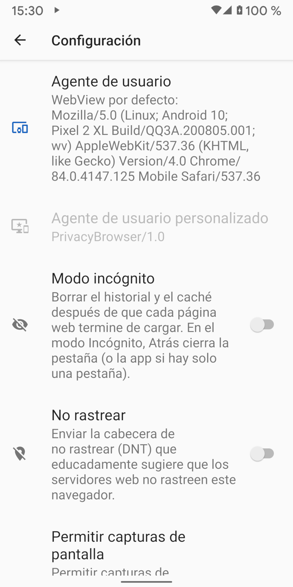

Cuando los navegadores web se conectan a las páginas web, envían un agente de usuario, que identifica al navegador y a las capacidades de rendering que posee. El servidor web puede usar esta información para decidir qué versión de página web enviar al navegador. Por ejemplo, muchas páginas web tienen diferentes versiones para escritorio y para navegadores móviles.
Por defecto, Navegador Privado usa su propio agente de usuario, que es ClearBrowser/1.0. Éste envía un mínimo de información al servidor web.
Ya que los servidores web no lo reconocen como un agente de usuario móvil, lo que normalmente muestran es la versión de escritorio del sitio.
En comparación, el agente de usuario por defecto de WebView divulga una gran cantidad de información sobre el hardware y el software del dispositivo. En la ventana Configuración, seleccionando WebView por defecto como el Agente de usuario muestra el agente de usuario que se enviará. La captura de pantalla de abajo muestra un Pixel 2 XL corriendo Android 10 con el sistema de android WebView 84.0.4147.125 instalado. La mayoría de servidores web reconocerán esto como un navegador móvil y mostrará la versión móvil del sitio si dispone de ella.
Existe tanta información en el agente de usuario que algunas veces será el mismo con sólo unos pocos visitantes a una página web. Si el agente de usuario es combinado con otra pieza de información identificativa que no es única, esto da lugar a menudo a una huella única. La Fundación de Frontera Electrónica (EFF) creó una herramienta llamada Panopticlick para demostrar cuánta información puede ser recogida de estas fuentes. Si esta prueba se realiza con javascript habilitado, la cantidad de información que es revelada aumenta grandemente. Browser Leaks (Fugas del navegador) y Am I Unique (¿Soy único?) son también buenas fuentes de información.

Existen varios agentes de usuario preestablecidos que coinciden con los más comunes navegadores y sistemas operativos.
A los efectos de huellas del navegador, todo lo que sea extraño es más fácil de rastrear.
Si Navegador Privado se vuelve común y mucha gente usa ClearBrowser/1.0 como su usuario de agente, será entonces una buena elección para su privacidad.
Firefox o Chrome son los usuarios de agente más comunes, pero se actualizan automáticamente y sus números de versión cambian tan rápidamente que es probable que los usuarios de agente incluídos
en Clear Browser no estén ya en sintonía con la mayoría de agentes de usuario en los registros del servidor.
Algunas páginas web no funcionan correctamente si no reconocen el agente de usuario. Usando la configuración de dominios para establecer el agente de usuario a WebView por defecto, o a otro agente de usuario que sea normalmente reconocido, suele resolver el problema. El WebView de android no permite que el agente de usuario esté en blanco. Si lo está, WebView simplemente envía el agente de usuario por defecto al servidor.